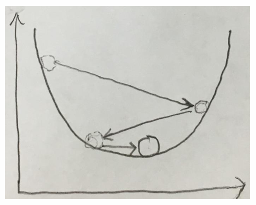

<div style="display: flex; justify-content: center; align-items: center; height: 700px;"> <div style="text-align: center; padding: 40px; background-color: white; border: 2px solid rgb(0, 63, 163); border-radius: 20px; box-shadow: 0 0 20px rgba(0,0,0,0.1);"> <h1 style="font-size: 48px; font-weight: bold; margin-bottom: 20px; color: #333;">SI100+ 2024 Lecture 8</h1> <p style="font-size: 24px; color: #666;">人类是有极限的！——机器学习的诞生</p> <p style="font-size: 16px; color: #999; margin-top: 20px;">SI100+ 2024 Staff | 2024-09-09</p> </div> </div> <!--s--> <div class="middle center"> <div style="width: 100%"> # Part.0 这是魔法还未诞生的故事... </div> </div> <!--v--> ## 回到回到魔法盒子 <img src="images/magic_box_ml.png" width="85%" style="display: block; margin: 0 auto;"> - 第一个魔法盒子里有一部分输入数据、对应的输出数据 <!-- .element: class="fragment" --> - 这个魔法盒子根据它们输出模型 <!-- .element: class="fragment" --> - 第二个魔法盒子根据模型和另一部分输入数据（也就是测试集，test set）输出结果 <!-- .element: class="fragment" --> <!--v--> ## 魔法？ 你可能在各路营销号或有技术的~~营销号~~公众号等自媒体见到过一些AI笑话 - “AI就是魔法” <!-- .element: class="fragment" --> - “随便动了一个超参数模型就跑起来了” <!-- .element: class="fragment" --> <li> <del>我的空间</del> </li> <!-- .element: class="fragment" --> <img src="images/qzone.png" width="85%" style="display: block; margin: 0 auto;"> <!-- .element: class="fragment" --> <!--v--> ## 魔法！ 然而，在机器学习的数据量还未飞升的年代，理论计算机科学家与数学家曾经也有过理论化的机器学习的美好愿望 <!-- .element: class="fragment" --> - 机器学习理论（machine learning theory）最先研究的对象也是比较传统的机器学习算法 <!-- .element: class="fragment" --> - 我们的第二章也将从这里开始 <!-- .element: class="fragment" --> <!--v--> ## 对了还有个FAQ： “机器学习”和“人工智能”有什么区别？ - 事实上，这两个名词也经常被混用 <!-- .element: class="fragment" --> - 很多时候它们会指代相同的意思 <!-- .element: class="fragment" --> - 不过，如果有人跟你强调TA在讲“机器学习”（比如名叫“机器学习”）的课程，那总体上重点会放在传统机器学习上 <!-- .element: class="fragment" --> <!--s--> <div class="middle center"> <div style="width: 100%"> # Part.1 感知机，神经网络的起源（不保证100%真的是起源） </div> </div> <!--v--> ## 回忆一下上节课 因为内容太多我们还是翻上节课的slides好了。 <!--v--> ## 我们已经完全了解机器学习了，能不能来点实战 我们尝试让盒子不再是魔法。 <!-- .element: class="fragment" --> - 上节课举的“学习汉字”的例子中，我们并不知道“纠错”是如何实现的 <!-- .element: class="fragment" --> - 有没有办法在一个例子中具象化纠错的过程？ <!-- .element: class="fragment" --> <!--v--> ## 让我们找一个高中学过的二维平面上的问题 现在你有一个二维平面，平面上有一个点集及其标签 $\left\\{ (x_1^{(i)}, x_2^{(i)},y^{(i)}) \right\\} $，其中 $x_j^{(i)} \in \mathcal{R} ,y^{(i)}\in \\{ -1, 1 \\}$ <!-- .element: class="fragment" --> 根据我们在高中学到的知识，一个点 $x^{(i)}$ 也可以表示一个向量。又根据我们在高中学到的知识，两个向量可以进行点积，点积的正负可以表示它的角度是锐角还是钝角。<!-- .element: class="fragment" --> <span> 现在，我们想找到一个向量，使得它与所有 $y = 1$ 的点（也可以叫它们正样本）的点积都不小于 0（或者说“指向”这些点），与所有 $y = -1$ 的点（也可以叫它们负样本）的点积都小于0（或者说“背离”这些点）。换句话说，我们想要找到一条直线（这条直线与该向量的法向量平行），使它能够尽可能地**分割** $y = 1$ 的点和 $y = -1$ 的点，使得在直线同一侧的点尽可能都是同一类型。</span> <!-- .element: class="fragment" --> <!--v--> ## 让我们找一个高中学过的二维平面上的问题 现在你有一个二维平面，平面上有一个点集及其标签 $\left\\{ (x_1^{(i)}, x_2^{(i)},y^{(i)}) \right\\} $，其中 $x_j^{(i)} \in \mathcal{R} ,y^{(i)}\in \\{ 0, 1 \\}$ 根据我们在高中学到的知识，一个点 $x^{(i)}$ 也可以表示一个向量。又根据我们在高中学到的知识，两个向量可以进行点积，点积的正负可以表示它的角度是锐角还是钝角。 > 这里我们表示点的方式有些特殊。首先，形如 $\{x\}$ 的记号一般用来表示一个集合。我们在高中表示一个点的形式通常是 $(x,y)$，但在这里，点的坐标用 $(x_1,x_2)$ 来表示，而 $y$ 指的是标签。在高中，如果我们想表示第 $i$ 个点，通常会把它写成 $(x_i,y_i)$ 的形式，而在这里下标也变成了上标，还给 $i$ 加上了括号。第一次看见它的时候可能会感觉有点奇怪~~好吧看很多次可能都会感觉很奇怪~~，但这样的表示方式是为了未来的方便。（~~不过给 $i$ 加括号是为什么我也不知道~~） <!--v--> ## 让我们找一个高中学过的二维平面上的问题 <img src="1.png" width="40%" style="display: block; margin: 0 auto;"> <!-- .element: class="fragment" --> 大家可以思考一下如何用人类智慧或者算法解决这个问题。<!-- .element: class="fragment" --> <div class="fragment"> > 上述提到的点集都是训练集。在实际应用中，你还需要把找到的向量拿到测试集上进行测试，查看你找到的向量区分的效果如何。你发现了没有？其实这里我们隐含了一个假设，就是训练集和测试集是类似的，或者说，**来源于同一分布**。我们将在这节课的扩展部分稍微多聊聊这里的内容。 </div> <!--v--> ## 人类智慧 用肉眼观察可得：注意到在上面的例子里有一条直线可以完全分开两个类别，用强大的人类大脑可以把这条直线和它的法向量（也就是我们要求的那个向量）画出来。 <!-- .element: class="fragment" --> <img src="images/lin_sep_ex.png" width="60%" style="display: block; margin: 0 auto;"> <!-- .element: class="fragment" --> <!--v--> ## 人类智慧 <img src="images/lin_sep_ex.png" width="40%" style="display: block; margin: 0 auto;"> <div class="fragment"> > 如果一个点集真的能被证明可以完全分开成两个类别，我们称这样的点集是线性可分的（linear seperable）。 </div> <div class="fragment"> > 所以直接用直线描述不是更直观吗？为什么我们之前要用向量的形式描述这个问题？ </div> <!--v--> ## 算法？ 欢迎发挥你的脑洞踊跃抢答。如果你想提出传统算法，请用数据一步到位地输出答案。如果你想提出一个机器学习算法，请描述你是如何实现“纠错”的。 <!-- .element: class="fragment" --> <span>想到答案了吗？没有想到也没关系~~想到了你就是先天机器学习圣体~~，我们来看看1957年的人类是怎么做的。 </span> <!-- .element: class="fragment" --> <!--v--> ## 感知机（Perceptron） 感知机由美国学者 Frank Rosenblatt 在1957年提出。它是怎么处理上面的问题的呢？其实非常简单： <!-- .element: class="fragment" --> - Step 1: 设我们要找的向量 $\boldsymbol{w} = (w_1, w_2)$，其中 $w_1,w_2$ 为参数，它们在最开始会初始化为一个随机值。 <!-- .element: class="fragment" --> <div class="fragment"> > 这样的随机初始化在机器学习中非常常见。 </div> - Step 2: 遍历每一个点。对于点 $i$，如果 $\boldsymbol{w} \cdot \boldsymbol{x^{(i)}} \geqslant 0$ 但 $y^{(i)} = -1$，更新 $\boldsymbol{w} \leftarrow \boldsymbol{w} - \boldsymbol{x}$；如果 $\boldsymbol{w} \cdot \boldsymbol{x^{(i)}} < 0$ 但 $y^{(i)} = 1$，更新 $\boldsymbol{w} \leftarrow \boldsymbol{w} + \boldsymbol{x}$。 <!-- .element: class="fragment" --> - Step 3: 一直重复Step 2，直到无法再更新为止。然后，感知机就会输出$\boldsymbol{w}$，你可以拿着它去测试集看看结果了。 <!-- .element: class="fragment" --> 就这么简单！ <!-- .element: class="fragment" --> <!--v--> ## 等等，听上去可能还是有些抽象 我们再来稍微解释一下然后举个栗子。 - Step 2是我们提到的“纠错环节” <!-- .element: class="fragment" --> - 我们是怎么更新的呢？ <!-- .element: class="fragment" --> - 对于点$i$，如果$\boldsymbol{w}\cdot\boldsymbol{x^{(i)}}\ge0$，说明当前我们的向量会把点$i$看作正样本。但是，如果它实际上是负样本的话（也就是$y^{(o)}=-1$），说明我们的向量的“指向”离它太近了，应该更远离它一点。所以，我们需要让$\boldsymbol{w}\leftarrow\boldsymbol{w}-\boldsymbol{x}$；你可以在脑海里脑补一下向量减法 <!-- .element: class="fragment" --> - 对于点$i$，如果$\boldsymbol{w}\cdot\boldsymbol{x^{(i)}}<0$，说明当前我们的向量会把点$i$看作负样本。但是，如果它实际上是正样本的话（也就是$y^{(o)}=1$），说明我们的向量的“指向”离它太远了，应该更靠近它一点。所以，我们需要让$\boldsymbol{w}\leftarrow\boldsymbol{w}+\boldsymbol{x}$；你可以在脑海里脑补一下向量加法 <!-- .element: class="fragment" --> - 接下来我们用我灵魂的画图进行几个例子的举。 <!-- .element: class="fragment" --> <!--v--> ## 在很大的点集里跑起来是这样的 <img src="perceptron_work.gif" width="45%" style="display: block; margin: 0 auto;"> <!-- .element: class="fragment" --> <div class="fragment"> > 其实，找向量和找直线并没有本质上的区别，毕竟找到了向量，你总有办法找到一条截距合适的直线。但是，之所以我们用找向量来描述这个问题，也是因为用向量的形式描述感知机的过程非常简便。感兴趣的同学可以试着用上面的思路解决找直线的问题，然后思考一下你得出的算法会不会有什么奇怪的地方......比如我们刚刚提到的截距。 </div> <!--v--> ## 成功抵达终点 不过，你可能会有一个小小的疑问：这个算法真的能找到解而不一直循环吗？ 还真是。数学家们证明了，只要一个点集线性可分，那么感知机就一定能在有限步数内找到答案。 <!-- .element: class="fragment" --> Theorem 1 (Perceptron Convergence Theorem)：如果一个点集是线性可分的，假设向量 $\boldsymbol{w}^*$ 可以用来区分这个点集。如果存在 $||\boldsymbol{w}^*||\leqslant 1$，且满足对任意点 $i$ 均有 $||\boldsymbol{x}^{(i)}|| \leqslant 1$，那么令 $\delta = \min_i |\boldsymbol{w} \cdot \boldsymbol{x^{(i)}} |$，感知机一定可以在不多于 $\frac{1}{\delta^2}$ 的错误次数内找到合法解 $\boldsymbol{w}$。 <!-- .element: class="fragment" --> <div class="fragment"> > 我们将在这节课的扩展部分稍微多聊聊这里的内容。 </div> <!--v--> ## 但是，如果点集不是线性可分的话...... 就像这种情况。肉眼观察可得，肯定不存在一条向量能把这些点按正负分成两半。 <!-- .element: class="fragment" --> <img src="images/non_lin_sep_ex.png" width="45%" style="display: block; margin: 0 auto;"> <!-- .element: class="fragment" --> 在这种情况下，我们的感知机会不幸死机。 <!-- .element: class="fragment" --> <span> 但是，没有人规定机器学习一定要做到100%准确率，哪怕是在训练集上。因此，只要我们保证我们的算法能跑完就好了，至少这样我们能跑出一个结果给我们的甲方爸爸看。换句话说，我们希望我们的机器学习算法能够**收敛（converge）**到一个结果上。</span> <!-- .element: class="fragment" --> 怎么办呢？ <!-- .element: class="fragment" --> <!--v--> ## 听这课还摸鱼的人有难了 - 众所周知，在我们日常的学习过程中，不是老师教了什么我们就学会了什么。我们吸收知识的进度和老师的实际教学进度是有差距的。 <!-- .element: class="fragment" --> <li class="fragment">更众所周知的是，如果一堂课上的太久，我们学习的效率是要下降的。如果拖得太久，那我们上课可能就会掉线<del>开摆</del>，完全听不进去了。</li> 但机器不是这样。只要你不停止程序运行，它可以一直学习下去。因此，我们希望机器的学习过程能够慢慢停止到一个合适的结果上。 <!-- .element: class="fragment" --> <!--v--> ## 听起来模仿人类很合理，但总感觉有什么不对劲 可是机器为什么要这么做？人类学不了太久是因为学不动了，但机器明明可以一直学啊？ <!-- .element: class="fragment" --> ......咦，一直学就是最优的吗？ <!-- .element: class="fragment" --> <!--v--> ## 学到最高点 从上面线性不可分的例子就可以看出，让机器一直学习并不一定会达到最优解。 <!-- .element: class="fragment" --> 事实上，从更一般的角度去看，我们可以把参数看成自变量，学习效果看成因变量（也就是把它们看成函数），于是机器学习就是通过改变自变量来尝试找到这个函数的最优（optimum）。 <!-- .element: class="fragment" --> 但是，假如一个机器学习算法每一步令参数变化的量都一直保持不变的话，那么就有可能出现直接跳过最优点的情况。 <!-- .element: class="fragment" --> <img src="images/miss_min.png" width="40%" style="display: block; margin: 0 auto;"> <!-- .element: class="fragment" --> <!--v--> ## 学习率（learning rate）和学习率衰减（learning rate decay） <span> 因此，我们需要给机器学习算法设置一个**学习率**，使其每一步更新参数都受到学习率的约束。同时，这个学习率还有必要逐步降低，从而让机器学习算法逐步走向收敛。</span> <!-- .element: class="fragment" --> <div style="display: flex; align-items: center; justify-content: center;" class="fragment">  <img src="images/learning_rate_ex_2.png" width="45%" style="margin-left: 50px;"> </div> <!--v--> ## 学习率（learning rate）和学习率衰减（learning rate decay） <div style="display: flex; align-items: center; justify-content: center;" class="fragment"> <img src="images/learning_rate_ex_2.png" width="20%" style="margin-left: 50px;"> </div> 学习率和学习率衰减与机器学习算法的关系是什么？ <!-- .element: class="fragment" --> - 它们不会被机器学习算法主动更新，却影响着学习的结果 <!-- .element: class="fragment" --> - 类似这样的参数叫做超参数（hyperparameter） <!-- .element: class="fragment" --> <div class="fragment"> > 当然，我们收敛的位置也不一定是，或者说，大概率不是完美的最优点。这部分的内容将会在后续进行更多探讨。 </div> <!--v--> ## 改进后的感知机 - Step 1: 设我们要找的向量 $\boldsymbol{w} = (w_1,w_2)$，其中 $w_1,w_2$ 为参数，它们在最开始会初始化为一个随机值。初始化一个学习率 $\eta$ 和学习率衰减函数 $f(\eta)$。 <!-- .element: class="fragment" --> - Step 2: 遍历每一个点，对于点 $i$，如果 $\boldsymbol{w} \cdot \boldsymbol{x^{(i)}} \geqslant 0$ 但 $y^{(i)} < 0$，更新 $\boldsymbol{w} \leftarrow \boldsymbol{w} - \eta \boldsymbol{x}$；如果 $\boldsymbol{w} \cdot \boldsymbol{x^{(i)}} < 0$ 但 $y^{(i)} > 0$，更新 $\boldsymbol{w} \leftarrow \boldsymbol{w} + \eta \boldsymbol{x}$。 <!-- .element: class="fragment" --> - Step 3: 令$\eta\leftarrow f(\eta)$，一直重复Step 2，直到无法再更新或者更新效果低于某个阈值为止。然后，感知机就会输出$\boldsymbol{w}$，你可以拿着它去测试集看看结果了。 <!-- .element: class="fragment" --> <div class="fragment"> > 其实在现在实际的机器学习训练（可能不适用于感知机的训练）中，$\eta$ 的取值可能远比你之前想象的要小—— $\eta = 0.001$ 甚至 $0.0001$ 都是很有可能的。 > > 而 $f(\eta)$ 也是一个有很多选择的东东。一个简单的例子就是 $f(\eta) = \alpha \eta$，其中 $\alpha$ 是个很接近但小于 $1$ 的数，比如 $0.999$ </div> <!--s--> <div class="middle center"> <div style="width: 100%"> # Part.2 再一次认识机器学习 </div> </div> <!--v--> ## 回顾上述的一整个流程 实际上，之前讲过的流程已经基本体现了一个机器学习算法的所有行为。现在我们把它们抽象一下，就得到了一个机器学习算法的完整流程（这个流程会比上节课更加正式）： <!-- .element: class="fragment" --> - Step 1: 随机初始化参数； <!-- .element: class="fragment" --> <li class="fragment"> Step 2: 给模型输入训练集的数据，得到模型的输出，也就是<b>预测（prediction）</b> </li> <li class="fragment"> Step 3: 计算预测与真实结果的差距，也就是<b>损失（loss）</b> </li> - Step 4: 根据损失优化原来的参数 <!-- .element: class="fragment" --> - Step 5: 调整部分超参数，重新回到Step 2，直到满足算法的终止条件 <!-- .element: class="fragment" --> ......嗯？等等，你这给我干哪来了？ <!-- .element: class="fragment" --> <!--v--> ## 嗯？嗯？嗯？ 上面说的流程似乎和之前说的感知机的流程有那么亿点点区别。 <!-- .element: class="fragment" --> - 感知机的纠错是实时的，输入一个数据就可以纠错一次，而不是一股脑输入全部的数据 <!-- .element: class="fragment" --> - 感知机中预测与真实结果的差距就是一个条件判断，损失是什么？优化和损失有关系吗？ <!-- .element: class="fragment" --> - 如果你在网上查找感知机，可能会发现对它的描述有不同版本；在有的版本里，它们的感知机也是一次性输入全部数据的 <!-- .element: class="fragment" --> - 你可能还会发现它们描述优化参数的过程非常复杂，一点也没有我们上述提到的算法简约 <!-- .element: class="fragment" --> <li class="fragment"> 这其中有什么区别<del>本手妙手俗手</del>吗？</li> <!--v--> ## 嗯？嗯？嗯？ - 对于第一个“实时纠错”的问题，这里主要是为了方便大家以后的自学做个简要解释 <!-- .element: class="fragment" --> - 你可能会在阅读理论较多的机器学习算法教学内容时，发现理论中往往会描述成“输入全部数据并计算损失” <!-- .element: class="fragment" --> - 一方面，这意味着每次更新损失函数都能考虑到所有数据的信息，这有助于更准确地更新参数 <!-- .element: class="fragment" --> - 另一方面，在理论中用这样的范式去写在表达上也更为方便 <!-- .element: class="fragment" --> <div class="fragment"> > 也就是说，其实感知机也可以写成输入全部数据、计算损失、优化参数这样的范式。下一节课我们会介绍怎样写成这样的形式。 不过，在机器学习的实战过程中，每一次喂给模型的并不一定是全部数据。恰恰相反，可能一次喂给模型的只有极少量的数据。这部分的内容我们会在机器学习实战的录播课中介绍。 </div> <!--s--> <div class="middle center"> <div style="width: 100%"> # Part.3 更多的任务，更多的定义 </div> </div> <!--v--> ## 人总是离不开分类学（双关）的 <span> 我们已经意识到，机器可以帮我们解决各种各样的问题。作为人类，我们能帮机器做的就是把这些问题，或者说任务分好类，从而面对不同的任务挑出合适的机器来解决。~~或者面对不同的任务掏出相同的GPT~~ </span> <!-- .element: class="fragment" --> 感知机用它强大的智慧把一个点集分为了两部分。类似这样把一个点集分成若干个部分的任务，我们是不是可以给它们统一取个名字？ <!-- .element: class="fragment" --> <ul> <li class="fragment"> 分类（classification）</li> <li class="fragment"> 具体来说，感知机解决的是<b>二分类（binary classification）</b>问题 </li> <li class="fragment"> 分类是机器学习的一大核心任务 </li> </ul> <!--v--> ## 分类是个很大的领域 其实，很多问题的背后都是分类问题。 <!-- .element: class="fragment" --> - 预测围棋里谁会赢是分类（不考虑和棋的话就是二分类）（注意这里不是预测获胜概率）<!-- .element: class="fragment" --> - 人脸识别你是班里的哪一个人是分类（我们一般把这种分类叫做多类别分类（multi-class classification） <!-- .element: class="fragment" --> - 把一个人贴很多社交标签也是分类（我们一般把这种分类叫做多标签分类（multi-label classification） <!-- .element: class="fragment" --> 分类不能解决什么样的问题？ <!-- .element: class="fragment" --> <!--v--> ## 如果问题的要求是尽可能地逼近真实值...... 让我们再次翻开高中课本，找到我们高中学过的（二维平面上的）线性回归（linear regression）和最小二乘法（least squares）（希望大家都学过）。 <!-- .element: class="fragment" --> 线性回归的目标是寻找一个函数，使得所有观测点到该函数的距离的平方和最小，从而在给定横坐标的情况下预测对应的纵坐标。 <!-- .element: class="fragment" --> <img src="images/image-3.png" width="45%" style="display: block; margin: 0 auto;"> <!-- .element: class="fragment" --> <div class="fragment"> > 这里有一个无数面试经典问题：线性回归的线性是什么意思？ </div> <!--v--> ## 如果问题的要求是尽可能地逼近真实值...... 这个任务为什么不能被分类概括？它和分类任务有什么区别？ <!-- .element: class="fragment" --> <span> 像这样的，目标是让预测结果尽可能接近真实结果的任务，叫做**回归（regression）**。</span> <!-- .element: class="fragment" --> <!--v--> ## 分类与回归，离散与连续 如何区分分类和回归呢？ <!-- .element: class="fragment" --> <span> 从人话的角度，其实分类也是在 *接近* 真实结果对吧？</span> <!-- .element: class="fragment" --> <span> 好像也有那么一点不对——分类希望的是和真实结果 *完全一致* ——预测和结果是同一个类别。</span> <!-- .element: class="fragment" --> 找到概括的方法了吗？ <!-- .element: class="fragment" --> <!--v--> ## 分类与回归，离散与连续（cont'd） <span> 实际上，分类任务指的是任务目标**离散（discrete）**的一类问题，而回归任务指的是任务目标**连续（continuous）**的一类问题。</span> <!-- .element: class="fragment" --> - 离散与连续的区别大家接触过吗？ <!-- .element: class="fragment" --> <li class="fragment"> 橙子是离散，橙汁是连续（<del>并非物理专业学习指导</del>）</li> - 数列是离散，函数是连续 <!-- .element: class="fragment" --> <li class="fragment"> 分类的目标是有限的类别，回归的目标是 <em>无限的</em> 类别。</li> <div class="fragment"> > 这里的无限可能在数学上定义不一定严密，主要是为了方便大家理解，意会一下就好。之后你们会在离散数学中接触到更多的“无限”。 > 下一节课我们会讲到如何定义损失，也就是损失函数。从更general~~对不起这个词我实在想不到怎么用中文表示~~的角度来思考，我们甚至可以说分类与回归的**唯一区别**就在于**损失函数不同**。这可能听起来比较amazing，在之后的AI旅程中你可以多多思考。 > </div> <!--v--> ## 其他的传统机器学习算法 这里列举了一些算法，感兴趣的话大家可以去了解： - Winnow - 决策树（Decision Tree）和它的前身 Decision List 看起来分类和回归已经足够概括所有的机器学习任务了。还有别的漏网之鱼吗？ <!--v--> ## 再次再次回到魔法盒子 <img src="images/magic_box_ml.png" width="85%" style="display: block; margin: 0 auto;"> 如果，我们的机器学习算法不需要ground-truth？ <!--v--> ## 疑似逻辑陷阱 <!--v--> ## 机器学习的学习方式 - 假设有一个人前来买瓜…… <img src="https://ts1.cn.mm.bing.net/th/id/R-C.40660866ffb8656f6f480057435db2cd?rik=Pqe%2bMbu11CArmg&riu=http%3a%2f%2fwww.guangyuanol.cn%2fuploads%2fallimg%2f210623%2f20434W646-5.gif&ehk=oTNL%2bakPK6Uky5UPfBI9Y1idCcCJi42IyKbE%2fNY1DVI%3d&risl=&pid=ImgRaw&r=0" width="45%" style="display: block; margin: 0 auto;"/> - 华强最关心的莫过于瓜到底熟没熟 <!--v--> ## 机器学习的学习方式 (cont'd) - 那么，人类如何判断一个瓜熟了没？（不可以劈瓜！！！） - 色泽：青绿？乌黑？浅白？ <!-- .element: class="fragment" --> - 根蒂：蜷缩？稍蜷？硬挺？ <!-- .element: class="fragment" --> - 敲声：浊响？沉闷？清脆？ <!-- .element: class="fragment" --> <li class="fragment"> <del>一个优秀的贝斯手往往能通过敲声判断西瓜好坏（经典贝斯笑话）</del> </li> <!--v--> ## 监督学习（supervised learning） - 如果我们希望训练出一个用来预测是“好瓜”还是“坏瓜”的模型，我们就需要 **样例（Example）** > 这里的“好瓜”，“坏瓜”是离散的，也就是之前提到的 **分类**，如果想预测成熟度 $0.00 \sim 0.99$ 这样连续的数据，那就是之前提到的 **回归** ，你学会了吗（ - 样例可能是人们 手动提供的 大量的 经验总结：例如 `色泽青绿;根蒂蜷缩;敲声浊响 -> 好瓜` <li class="fragment"> 由于我们需要提供样例，也就是对模型要学习的训练数据提前做标记，这样的学习需要人类参与<b>监督</b> </li> <li class="fragment"> 像这种提供<b>输入数据</b>和其对应的<b>标签数据（label）</b> ，然后搭建一个模型，模型经过训练后准确的找到输入数据和标签数据之间的<b>最优映射关系</b> ，从而对新的未标记数据进行预测或分类，我们称作<b>监督学习(supervised learning)</b> ，分类和回归就是监督学习的代表</li> <!--v--> ## 机器学习的学习方式 (cont'd) - 太累了！我不想当数据工人！！！怎么办！ <!--v--> ## `sudo 机器自己学` - 我们还可以对西瓜做 **聚类 (clustering)** ，只提供输入数据，而不事先标注任何东西，让机器自己学习 <li class="fragment"> 例如在机器自己学习探索各种西瓜的过程中，会<b>自动地</b>把西瓜分成许多组，每一组叫一个<b>簇 (cluster)</b> </li> <li class="fragment"> 所谓<b>物以类聚</b>，也就是机器会在聚类的过程中把 “类似” 的物体聚在一组 </li> <li class="fragment"> 这些自动形成的簇可能对应一些潜在的概念划分，例如 “浅色瓜” “深色瓜” 甚至 “本地瓜” “外地瓜”，而这些是我们<b>事先不知道的</b> </li> <li class="fragment"> 像这样<b>训练数据只包含输入样本，通常没有相应的标签或目标</b>的学习就是<b>无监督学习 (unsupervised learning)</b> ，聚类是无监督学习的代表 </li> <li class="fragment"> 无监督学习目标不是告诉计算机怎么做（没有label），而是让它自己去学习怎样做事情。 </li> <li class="fragment"> 这样的学习过程有助于我们了解数据内在的规律，能为更深入地分析数据建立基础. </li> <!-- ## 经典的聚类算法——KNN (K-Nearest Neighbors) * 顾名思义，就是k个最近的邻居（k近邻） * KNN的原理就是**当预测一个新样本的类别时，根据它距离最近的 K 个样本点是什么类别来判断该新样本属于哪个类别（多数投票）** * **距离度量、k值的选择及分类决策规则**是k近邻法的三个基本要素 ## 经典的聚类算法——KNN (K-Nearest Neighbors) <div align=center> <img src="image-4.png" width=700> <div align=left> * 图中绿色的点就是我们要预测的那个点，假设K=3。那么KNN算法就会找到与它距离最近的三个点（这里用圆圈把它圈起来了），看看哪种类别多一些，比如这个例子中是蓝色三角形多一些，新来的绿色点就归类到蓝三角了 * **距离度量、k值的选择及分类决策规则**是k近邻法的三个基本要素 ## 监督学习 * 没听懂？我们再举一个例子 * 假如有一群 草泥马 和 牛马 组成的马群，这时候需要一个机器对马群进行分类，但是这个机器不知道 草泥马 和 牛马 长什么样儿，所以我们首先拿一堆 草泥马 和 牛马 的照片给机器看，告诉机器 草泥马 和 牛马 **分别** 长什么样儿。机器经过反复的看，形成肌肉记忆，可以对 草泥马 和 牛马 形成自己的定义，然后机器就可以准确的对马群进行分类。 <div align="center"> <img src="image-5.png" alt="图片1" width="300"height="310"> <img src="image-6.png" alt="图片2" width="300"> </div> ### 监督学习 * 在KNN中我们会发现：初始的点是有颜色的，所有的data本质都是一个点以及其颜色的二元组，也就说不同的x对应不同坐标的点，不同的y对应点的颜色，即 $$ (点的坐标，颜色) $$ * 像这种提供**输入数据**（比如KNN里的点坐标）和其对应的**标签数据（label**，KNN的点的颜色），然后搭建一个模型，模型经过训练后准确的找到输入数据和标签数据之间的**最优映射关系**，从而对新的未标记数据进行预测或分类，我们称作**监督学习(supervised learning)** ## 无监督学习（unsupervised learning） * 定义:**训练数据只包含输入样本，没有相应的标签或目标** * 无监督学习目标不是告诉计算机怎么做（没有label），而是让它自己去学习怎样做事情 * 包装一下：我们只是单纯的将这两种马的照片给机器看，并没有告诉机器哪些是牛马，哪些是草泥马，机器在观察图片后发现马有两类，并能分辨出草原上的马分别属于哪一类 --> <!--v--> ## 无监督学习（unsupervised learning） 监督学习是因为找到了映射关系才能对西瓜进行分类的，那无监督学习凭啥能把相似的西瓜认出来？ * 无监督学习会从无标签数据中学习有效的特征或表示，而同一类的图片具有相似的特征 * 特征提取（feature extraction）：将任意数据（如文本或图像）转换成机器学习的数学特征 <!--v--> ## 分类与回归的再分类 <img src="image-8.png" width="85%" style="display: block; margin: 0 auto;"> <!--s--> <div class="middle center"> <div style="width: 100%"> # Part.4 总结，与...... </div> </div> <!--v--> ## 总结 我们今天讲了什么？ <!-- .element: class="fragment" --> - 感知机 <!-- .element: class="fragment" --> - 更多的感知机 <!-- .element: class="fragment" --> - 机器学习的基本范式 <!-- .element: class="fragment" --> - 分类与回归 <!-- .element: class="fragment" --> - 有监督与无监督 <!-- .element: class="fragment" --> ......如果你还愿意听下去的话，那么，接下来是时候来点猛料大杯大脑升级了。 <!-- .element: class="fragment" --> <!--v--> ## 回到感知机（optional） 让我们回到之前提到的Perceptron Convergence Problem。